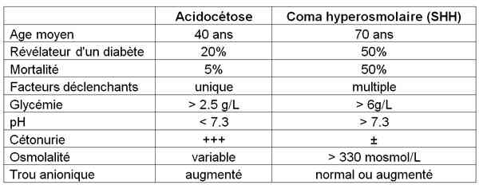

Bienvenue Sur Medical Education
Acidocétose diabétique de l'adulte
Spécialité : endocrinologie /
Points importants
-
L'acidocétose (ACD) est une complication grave chez le patient diabétique nécessitant une prise en charge thérapeutique rapide
-
Elle est caractérisée par une hyperglycémie et une acidose métabolique organique due à une accumulation de corps cétoniques dans le sang
-
Quasi uniquement dans le diabète de type 1 (cétonique)
-
Peut se voir dans le diabète de type 2 évolué en présence d'une affection sévère intercurrente
-
Incidence : 4,6 à 8 pour 1000 patients diabétiques
-
4 à 9% des motifs hospitalisation des diabétiques
-
Taux de mortalité < à 5%
-
Evolution rapidement favorable sous traitement
-
Complications liées au traitement : dyskaliémie, hypoglycémie
Présentation clinique / CIMU
SIGNES FONCTIONNELS
Présentation clinique / CIMU
SIGNES FONCTIONNELS
Première phase
-
Signes d'insulinopénie :
- polyurie - polydipsie
- polyphagie
- perte de poids
- crampes nocturnes
- troubles visuels
-
Signes de cétose :
- troubles digestifs : nausée, vomissement, ballonnement abdominal
Phase d'acidocétose le tableau s'installe rapidement en 24 heures
-
Signes d'insulinopénie :
- asthénie rapidement progressive
- amaigrissement rapide
- déshydratation : soif
-
Signes de cétose :
- nausées, vomissements, (toute suspicion de gastro entérite chez un diabétique doit être considérée comme un tableau d'acidocétose diabétique)
- douleurs abdominales (corrélées au degré d'acidose) pouvant simuler un ventre urgent
- troubles très progressifs de la conscience
-
Signes d'acidose :
- dyspnée de Kusssmaul
- odeur acétonique de l'haleine
CONTEXTE
Terrain
- Concerne dans 85% le diabétique de type 1, dans 15% le diabétique de Type 2
Circonstances de survenue
-
Type 1 :
- révélatrice (30%)
- arrêt ± volontaire de l'insuline (10%)
- infection +++ (30%)
- stress (IDM, chirurgie, AVC), grossesse
-
Type 2 :
- diabète « africain »
- avec infection ou stress sévères
- corticothérapie
EXAMEN CLINIQUE
Cétose
- Douleurs abdominales mais abdomen souple
- Haleine cétonique odeur pomme verte
Acidose
- Dyspnée de Kusssmaul (tachypolypnée) FR > 20/mn
- Coma (10%) examen neurologique normal
- Hypothermie
Déshydratation
- Pli cutané
- Trouble de la conscience
- HoTA
- Muqueuses sèches
- Yeux cernés, hypotonie des globes oculaires
EXAMENS PARACLINIQUES SIMPLES
- SpO2 normale ou basse (coma profond, inhalation)
- Glycémie capillaire > 6 mmol/L
- Cétonurie +++ (si possible car le patient étant très déshydraté aura du mal a avoir une miction)
- ECG : signes éventuels d'hyperkaliémie
CIMU
-
Tri 2
Signes paracliniques
Hyperglycémie > 6 mmol/L
Cétonémie > 1,5 mmoL
Ionogramme sanguin, urée, creatininémie
-
Rappel formules utiles :
- trou anionique = Na+ - (Cl- + HCO3-) =1 2 ± 4 normalement < 7 - 9 mmol/L
- osmolalité = 2 x (Na + K) + urée + glucose normal a 280 mosmol
- natrémie corrigée = Na (mmol/L) + 0.3 x (glycémie en mmol/L) ou 0.6 x (glycémie en g/L)
- Natrémie : élevée (perte d'eau importante), normale, ou basse (fausse hypo natrémie par hyperglycémie)
- Hémoconcentration
- Insuffisance rénale fonctionnelle
- Trou anionique augmenté
- Kaliémie: normale, ou élevée due à l'acidose, rarement basse (kaliopénie très sévère! attendre avant de commencer l'insuline)
_623 Tableau Evaluation biologique de l'acidocétose diabétique
Gaz du sang
- Acidose métabolique : pH < 7.3, HCO3- < 18 mM
NFS
- Hyperleucocytose, Hte augmentée
Hémocultures
- Si température >38.5° C
ECBU
Ponction lombaire
- Si signes en faveur d'un syndrome méningé
IMAGERIE
Radio pulmonaire à la recherche d'un foyer infectieux
Diagnostic étiologique
-
Infection (attention ACD en soi cause polynucléose)
-
Insulinothérapie insuffisante :
-
pas encore commencée
-
interrompue, erreur volontaire ou accidentelle (pompe, notamment pendant les premières semaines d'utilisation; impact majeur de l'éducation)
-
Infarctus du myocarde (peut être silencieux !)
-
Accident vasculaire cérébral
-
Embolie pulmonaire
-
Pancréatite aiguë
-
Médicaments
-
Corticoïdes, sympathomimétiques, alpha et bêta bloquants, diurétiques
Diagnostic différentiel
-
Syndrome d'hyperglycémie hyperosmolaire (SHH, anciennement appelé coma hyperosmolaire)
- pas encore commencée
- interrompue, erreur volontaire ou accidentelle (pompe, notamment pendant les premières semaines d'utilisation; impact majeur de l'éducation)
Diagnostic différentiel
- Syndrome d'hyperglycémie hyperosmolaire (SHH, anciennement appelé coma hyperosmolaire)
 _626 Tableau Diagnostic différentiel : coma hyperosmolaire/acidocétose
- Acidose lactique
- Cétose de l'éthylique
- Troubles de conscience associés à une dérégulation du diabète secondaire à une méningite, un sepsis, un AVC...
Traitement
PRE HOSPITALIER / INTRA HOSPITALIER
Stabilisation initiale
-
Débuter l'hydratation :
- réhydratation: 10% poids en 24h avec NaCl 9‰ : 1L en 1h, 1L en 2h, 1L en 4h
- remplacer par du G5% ou G10% dès que Glycémie < 2,5 g/L ou 15 mmol/L
- KCl : dès le début si K+ < 4,5 mM/L: 0,5 à 2 g/h IVSE
-
Insuline en IVSE
- _624 Tableau Insuline rapide en IVSE
- _625 Tableau Schéma basal-bolus insuline sous-cutané
- 5 à 10 U/h (0,1 U/Kg/h) en fonction protocole jusqu'à cétonémie < 1,5 mmol/L sur 2 prélèvements successifs séparés de 2h
- puis relais par insuline SC schéma basal - bolus quand le ionogramme sanguin est normal ; objectif glycémique = 0,8 à 2g/L
- en cas d'hypoglycémie, accélérer le G 10%, ne pas arrêter l'insuline en IVSE si cétonémie toujours > 0,6 mmol/L
-
Traitement de la cause : en particulier en cas d'infection :
- l'antibiothérapie probabiliste intraveineuse est systématique après prélèvement bactériologique, dose à adapter en tenant compte de l'insuffisance rénale
- anticoagulation
-
Bicarbonates (ne sert à rien si pH > 7) :
- association de son utilisation à l'apparition de l'oedème cérébral
- si ph < 7 : 250 à 500 mL de bicarbonate 1,4% en 1 à 2 heures
5 erreurs à ne pas commettre
- Arrêter la seringue électrique en raison d'hypoglycémie
- Ne pas recharger suffisamment en K+
- Perfuser des bicarbonates en dehors d'une unité de soins intensifs
- Ne pas traiter la cause de décompensation
- Ne pas respecter ou au moins ajuster le traitement que le patient diabétique a depuis des années, surtout pour son insuline basale
Rappel sur les insulines
- Insulines rapides : qui débutent leur action environ 15 minutes après l'injection sous la peau, agissent pendant 4 à 6 heures : Umuline rapide® ou Insuman rapide®, ou Actrapid ®
- Les analogues rapides passent dans le sang seulement quelques minutes après avoir été injectés sous la peau, leur durée d'action est de 2 à 3 heures : Apidra®, et NovoRapid®, Humalog®
-
Les insulines retard ont un début d'action plus tardif et un effet plus prolongé :
- les insulines à durée intermédiaire : qui débutent leur action 30 à 45 minutes après l'injection sous la peau, et agissent pendant 10 à 16 heure : NPH®
- les analogues lents qui débutent leur action 1 à 2 heures après l'injection sous la peau, et agissent pendant 20 à 24 heures: Lantus®, et Levemir®
Surveillance
CLINIQUE
-
Scope, pouls, PA, diurèse, glycémie capillaire /h
-
Cétonurie, cétonémie / 2 h
-
ECG /4h
-
Les douleurs abdominales doivent se résoudre dans les 24 heures du traitement
BIOLOGIQUE
-
Ionogramme sanguin, GDS : H+3, H+6, H+12, H+24 heures
Devenir / orientation
CRITERES D'ADMISSION
-
En réanimation si : collapsus, coma, K+ < 3 mmol/L, pH < 7, et/ou HCO3 < 7
-
En dehors de ces critères, hospitalisation dans un service de diabétologie, endocrinologie ou faute de place, service de médecine interne mais, dans ce denier cas, seulement après avoir effectué le relais de l'insuline IV à la forme SC
CRITERES DE SORTIE DU SAU
-
Aucun, il faut hospitaliser le patient soit en réanimation soit en médecine
Bibliographie
-
Diagnostic et classification du diabète sucré, les nouveaux critères : Diabetes & Metabolism (Paris) 1999, 25, 72-83 P. Drouin, J.F. Blickle, B. Charbonnel, E. Eschwege, P.J. Guillausseau, P.F. Plouin, J.M. Daninos
-
Correction de l'acidose métabolique en réanimation. Conférence de consensus en réanimation et médecine d'urgence. SRLF, juin 1999
-
Prise en charge de l'acidocétose en réanimation. SRLF, congrès 2001
-
Diabetic Ketoacidosis. eMedicine Journal 2001 ; 2(4) Donald W. Rucker
-
Complications métaboliques aigus du diabète sucré. Revue du Prat. 50:443-450,2000. Selam J.L
-
Hyperglycemic crises in diabetes. Diabetes Care 2004; 27, supp 1: S94-S102
-
Hyperglycaemic crises and lactic acidosis in diabetes mellitus. English P, Williams G. Postgrad Med 2004; 80: 253-261
-
Complications métaboliques aiguës du diabète Jean-Christophe Orban - Diane Lena - Mona Bonciu - Dominique Grimaud - Carole Ichai. Urgences pratiques 2007 ; 83 :13-17
-
Décompensation du diabète power point du DU médecine d urgence 2008. Dt marie LaloI. Hôpital Lariboisière Service d endocrinologie
-
Urgences métaboliques en diabétologie power point du Dt Danièle Dubois- Laforgue, Hôpital Cochin, Paris
Devenir / orientation
CRITERES D'ADMISSION
- En réanimation si : collapsus, coma, K+ < 3 mmol/L, pH < 7, et/ou HCO3 < 7
- En dehors de ces critères, hospitalisation dans un service de diabétologie, endocrinologie ou faute de place, service de médecine interne mais, dans ce denier cas, seulement après avoir effectué le relais de l'insuline IV à la forme SC
CRITERES DE SORTIE DU SAU
- Aucun, il faut hospitaliser le patient soit en réanimation soit en médecine
Bibliographie
-
Diagnostic et classification du diabète sucré, les nouveaux critères : Diabetes & Metabolism (Paris) 1999, 25, 72-83 P. Drouin, J.F. Blickle, B. Charbonnel, E. Eschwege, P.J. Guillausseau, P.F. Plouin, J.M. Daninos
-
Correction de l'acidose métabolique en réanimation. Conférence de consensus en réanimation et médecine d'urgence. SRLF, juin 1999
-
Prise en charge de l'acidocétose en réanimation. SRLF, congrès 2001
-
Diabetic Ketoacidosis. eMedicine Journal 2001 ; 2(4) Donald W. Rucker
-
Complications métaboliques aigus du diabète sucré. Revue du Prat. 50:443-450,2000. Selam J.L
-
Hyperglycemic crises in diabetes. Diabetes Care 2004; 27, supp 1: S94-S102
-
Hyperglycaemic crises and lactic acidosis in diabetes mellitus. English P, Williams G. Postgrad Med 2004; 80: 253-261
-
Complications métaboliques aiguës du diabète Jean-Christophe Orban - Diane Lena - Mona Bonciu - Dominique Grimaud - Carole Ichai. Urgences pratiques 2007 ; 83 :13-17
-
Décompensation du diabète power point du DU médecine d urgence 2008. Dt marie LaloI. Hôpital Lariboisière Service d endocrinologie
-
Urgences métaboliques en diabétologie power point du Dt Danièle Dubois- Laforgue, Hôpital Cochin, Paris
Auteur(s) : Johana BONI-MALKA, Marie LALOI-MICHELIN